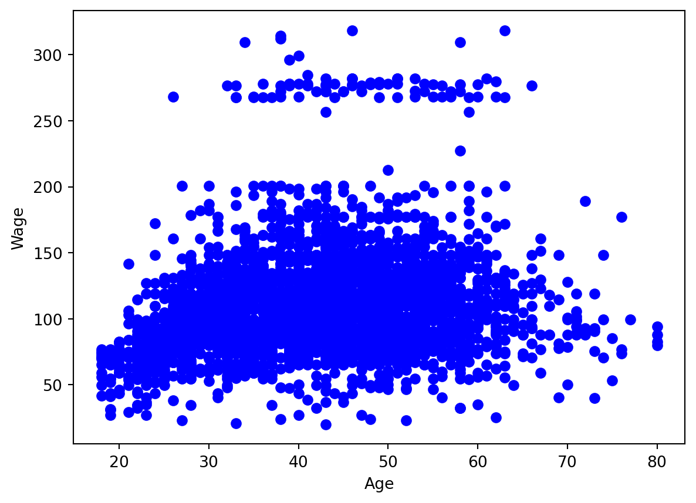

It’s always fruitful to have a look at the scatterplot before modelling the data.
import matplotlib.pylab as pltplt.plot(x,y,"bo")plt.xlabel("Age")plt.ylabel("Wage")plt.show()

We see, roughly, an inverse \(U\)-shape with higher variance in the middle than at the extreme ends. Moreover, there are at least two separate groups in the data, a “normal” group and a group with high wages.
(a)
Perform polynomial regression to predict wage using age. Use cross-validation to select the optimal degree d for the polynomial. What degree was chosen, and how does this compare to the results of hypothesis testing using ANOVA? Make a plot of the resulting polynomial fit to the data.
Recall that PolynomialFeatures can be used to construct polynomial features. For instance, a quadratic polynomial can be found using
from sklearn.preprocessing import PolynomialFeaturesX2 = PolynomialFeatures(2).fit_transform(x.reshape(-1,1))X2
The \(R^2\) for the quadratic model can be found using the score method.
from sklearn.linear_model import LinearRegression as LinRegLinReg().fit(X2, y).score(X2,y)
0.0820851464341249
Cross-validation can be done using cross_validate. The default scoring parameter is the \(R^2\).
from sklearn.model_selection import cross_val_scorecv_results = cross_val_score(LinReg(), X2, y, cv=10)r2 = cv_results.mean()r2
-0.020633875020027847
The resulting cross-validated \(R^2\) is negative; this means that the model performs worse than the mean.
To do the cross-validation for many polynomials we need a function. We will use the negative mean squared error since it is better to compare models in terms of that than the \(R^2\).
def cv_poly(degree): X = PolynomialFeatures(degree).fit_transform(x.reshape(-1,1))return cross_val_score(LinReg(), X, y, cv=10, scoring="neg_mean_squared_error").mean()
import matplotlib.pylab as pltplt.plot(cvs.keys(), -np.array(list(cvs.values())), "bo")plt.xlabel("Degree of polynomial")plt.ylabel("CV mean squared error")plt.show()
import matplotlib.pylab as pltplt.plot(x,y,"bo")plt.xlabel("Age")plt.ylabel("Wage")plt.plot(x, fit.predict(X3), linewidth =2, color ="orange")plt.show()